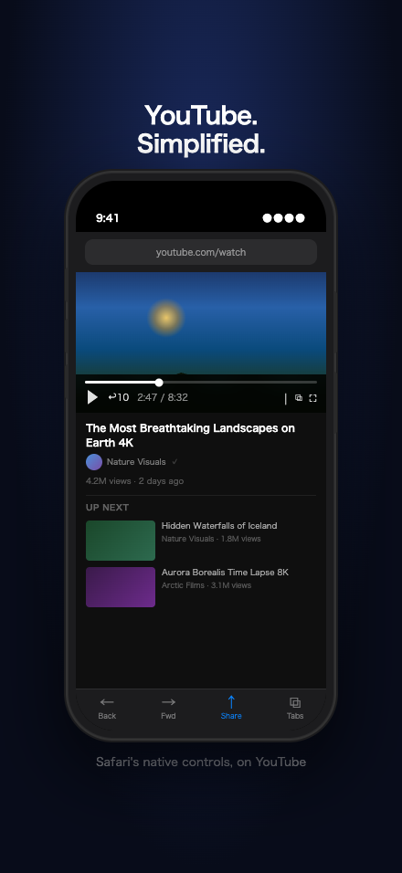
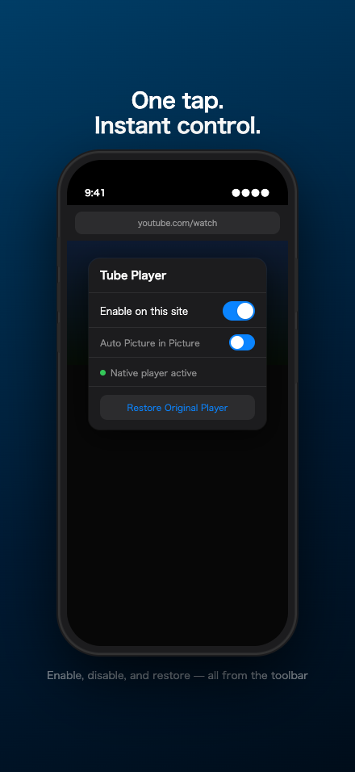
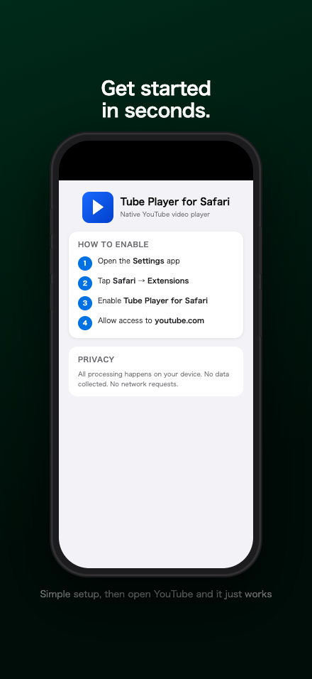
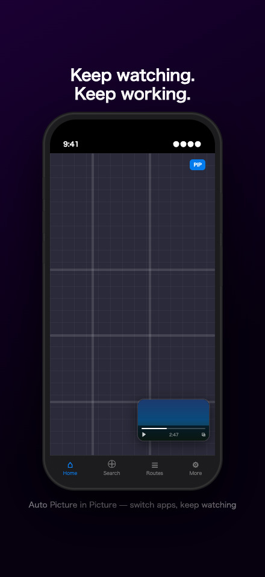
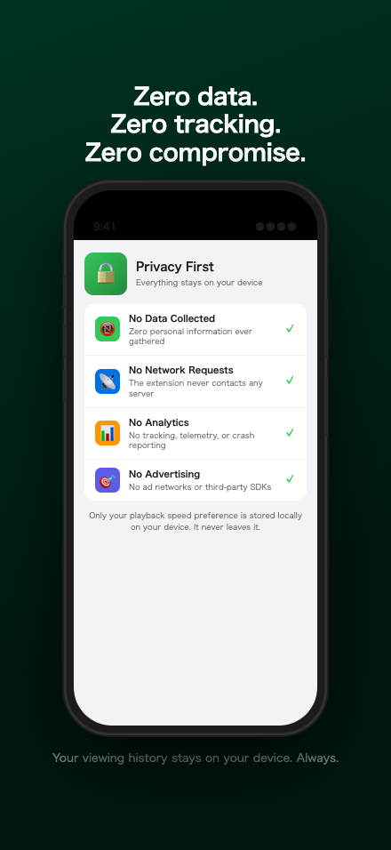
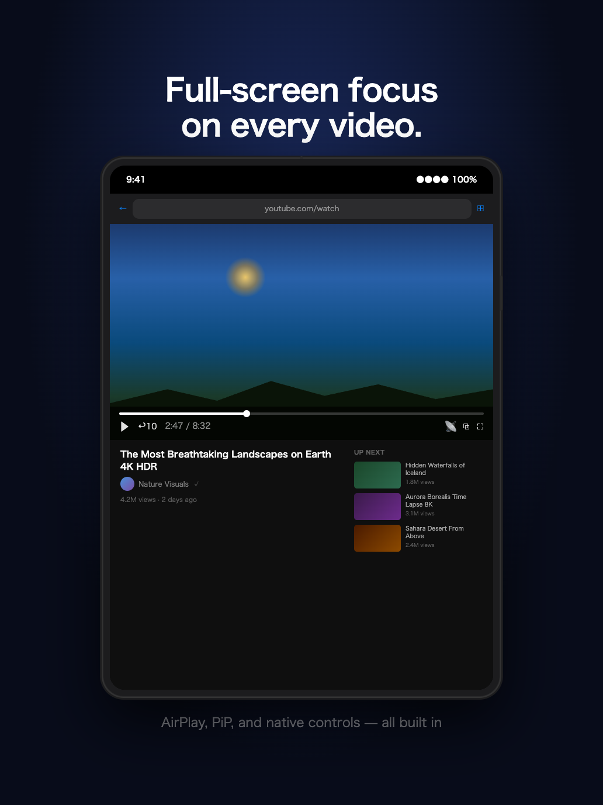
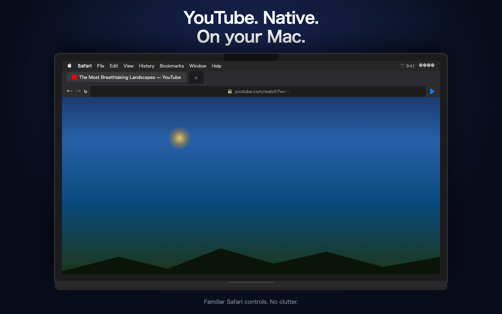
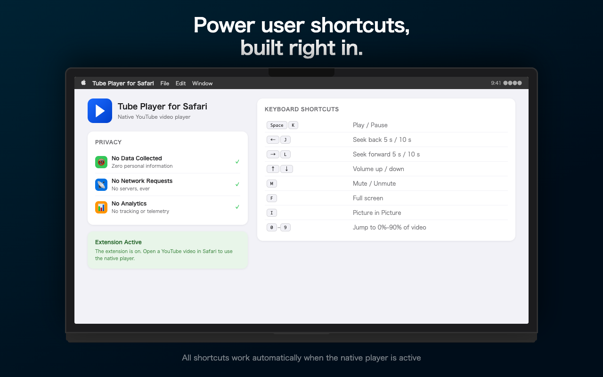

Replace YouTube's video player with Safari's native HTML5 player. Cleaner controls, keyboard shortcuts, Picture in Picture, and more. YouTubeの動画プレーヤーを、Safariのネイティブ HTML5 プレーヤーに置き換えます。スッキリしたコントロール、キーボードショートカット、ピクチャーインピクチャーに対応。
Replaces YouTube's player with Safari's built-in HTML5 video player. Familiar, lightweight, and always available. YouTubeのプレーヤーをSafariのHTML5ビデオプレーヤーに置き換えます。シンプルで軽量、いつでも使えます。
Full keyboard control on Mac. Space to play/pause, J/L to seek, arrow keys for volume, F for full screen, and more. Macでフルキーボード操作。スペースで再生/一時停止、J/Lでシーク、矢印キーで音量調整、Fでフルスクリーンなど。
Watch videos in a floating window while you use other apps. Automatic PiP when switching tabs is supported. 他のアプリを使いながら、フローティングウィンドウで動画を視聴。タブ切替時に自動でPiPに移行する機能も搭載。
Stream video directly to your Apple TV or AirPlay-compatible display from the native player controls. Apple TVやAirPlay対応ディスプレイへ、ネイティブコントロールから直接ストリーミング。
Select your preferred playback speed. Your preference is saved and applied automatically on every video. 好みの再生速度を選択できます。設定は保存され、次回以降も自動的に適用されます。
No data collection, no analytics, no tracking. All processing happens entirely on your device. データ収集なし、アナリティクスなし、トラッキングなし。すべての処理はあなたのデバイス上で完結します。
Available on iPhone, iPad, and MaciPhone・iPad・Macに対応

Native Playerネイティブプレーヤー

Extension Controls拡張機能コントロール

Setup Guide設定ガイド

Picture in Picture

Privacyプライバシー

Native Playerネイティブプレーヤー

Native Playerネイティブプレーヤー

Keyboard Shortcutsキーボードショートカット
Get started in just a few steps数ステップで開始できます
Download Tube Player for Safari from the App Store and open it once to complete setup.App StoreからTube Player for Safariをダウンロードし、一度開いてセットアップを完了します。
Go to Settings → Safari → Extensions and enable Tube Player for Safari.設定 → Safari → 機能拡張 を開き、Tube Player for Safari を有効にします。
When prompted, tap Allow to let the extension access YouTube pages. Or tap the AA button in Safari's address bar on a YouTube page and select Manage Extensions.確認が表示されたら 許可 をタップします。またはYouTubeページでSafariのアドレスバーの AA ボタンをタップし、機能拡張を管理 を選択します。
Navigate to any YouTube video in Safari. The native player replaces YouTube's player automatically.SafariでYouTubeの動画ページを開きます。ネイティブプレーヤーが自動的に置き換えます。
Download Tube Player for Safari from the Mac App Store and launch it.Mac App StoreからTube Player for Safariをダウンロードし、起動します。
In Safari, go to Safari → Settings → Extensions and check Tube Player for Safari.Safariで Safari → 設定 → 機能拡張 を開き、Tube Player for Safari にチェックを入れます。
Click the ▶ toolbar button on a YouTube page and choose Always Allow on youtube.com.YouTubeのページでツールバーの ▶ ボタンをクリックし、youtube.comで常に許可 を選択します。
Open any YouTube video. Use keyboard shortcuts: Space play/pause, J/L seek 10s, F full screen, I Picture in Picture.YouTubeの動画を開きます。キーボードショートカット: Space 再生/一時停止、J/L 10秒シーク、F フルスクリーン、I ピクチャーインピクチャー。
| Keyキー | Action操作 |
|---|---|
Space / K |
Play / Pause再生 / 一時停止 |
J / ← |
Seek back 10s10秒戻す |
L / → |
Seek forward 10s10秒進む |
↑ / ↓ |
Volume up / down音量 上げる / 下げる |
F |
Full screenフルスクリーン |
M |
Mute / Unmuteミュート / ミュート解除 |
I |
Picture in Picture |
0 – 9 |
Jump to 0%–90%0%〜90%にジャンプ |
Frequently asked questionsよくある質問
Standard video pages (youtube.com/watch), embedded players, Shorts, and playlists are detected. Live streams are handled separately. If replacement isn't possible for a particular page, the original player is left untouched.標準の動画ページ（youtube.com/watch）、埋め込みプレーヤー、ショート、プレイリストに対応しています。ライブ配信は別途処理されます。特定のページで置き換えができない場合、元のプレーヤーはそのまま維持されます。
Yes. Click the Tube Player toolbar button and tap "Restore Original Player" to switch back immediately. You can also disable the extension per-site or globally from the same popup.はい。ツールバーのTube Playerボタンをクリックして「元のプレーヤーに戻す」をタップすると、すぐに切り替えられます。同じポップアップからサイト単位、またはグローバルに拡張機能を無効にすることもできます。
No. The extension only replaces the player UI — it never extracts or saves media streams. It works entirely with the video stream YouTube already provides to the page.いいえ。拡張機能はプレーヤーのUIを置き換えるだけで、メディアストリームを抽出・保存することはありません。YouTubeがページに提供している動画ストリームをそのまま使用します。
Yes. The extension works with both free and Premium accounts. It replaces the player regardless of account status.はい。無料アカウントとPremiumアカウントの両方で動作します。アカウントの状態に関わらず、プレーヤーを置き換えます。
Background audio behavior depends on Safari and the OS version. The extension uses only standard browser APIs — it does not bypass any platform restrictions. Picture in Picture mode enables continued playback in a floating window.バックグラウンド再生はSafariとOSバージョンによって異なります。拡張機能は標準のブラウザAPIのみを使用しており、プラットフォームの制限を回避することはありません。ピクチャーインピクチャーモードを使用すると、フローティングウィンドウで再生を継続できます。
1. Check that the extension is enabled in Safari Settings → Extensions. 2. Make sure access to youtube.com is allowed. 3. Reload the page. 4. Try toggling the extension off and on in the toolbar popup. If the problem persists, use "Restore Original Player" to revert and try again on the next page load.1. 設定 → Safari → 機能拡張 で拡張機能が有効になっているか確認します。2. youtube.com へのアクセスが許可されていることを確認します。3. ページを再読み込みします。4. ツールバーのポップアップで拡張機能をオフ/オンしてみます。問題が続く場合は「元のプレーヤーに戻す」を使用して元に戻し、次のページ読み込み時に再試行してください。
The extension reads the YouTube page DOM to find and replace the video player element. It stores three preferences locally: enabled/disabled state, preferred playback speed, and auto-PiP setting. No data is ever sent to any server. See the Privacy Policy for full details.拡張機能は動画プレーヤー要素を見つけて置き換えるためにYouTubeページのDOMを読み取ります。有効/無効の状態、好みの再生速度、自動PiP設定の3つの設定をローカルに保存します。データが外部サーバーに送信されることはありません。詳細はプライバシーポリシーをご覧ください。